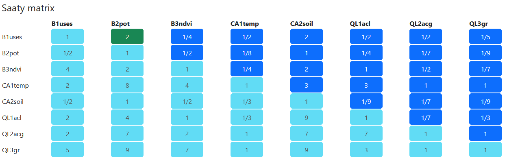
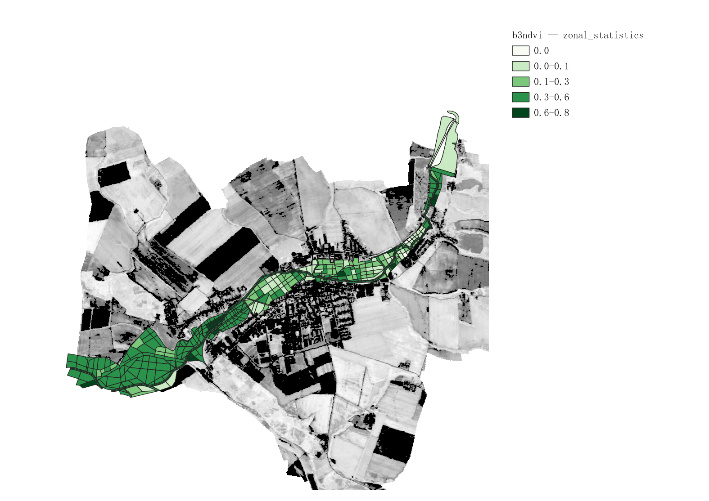
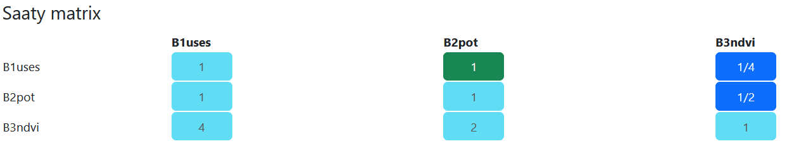
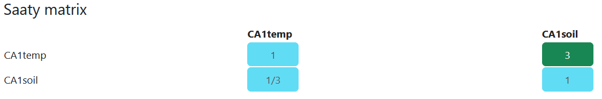
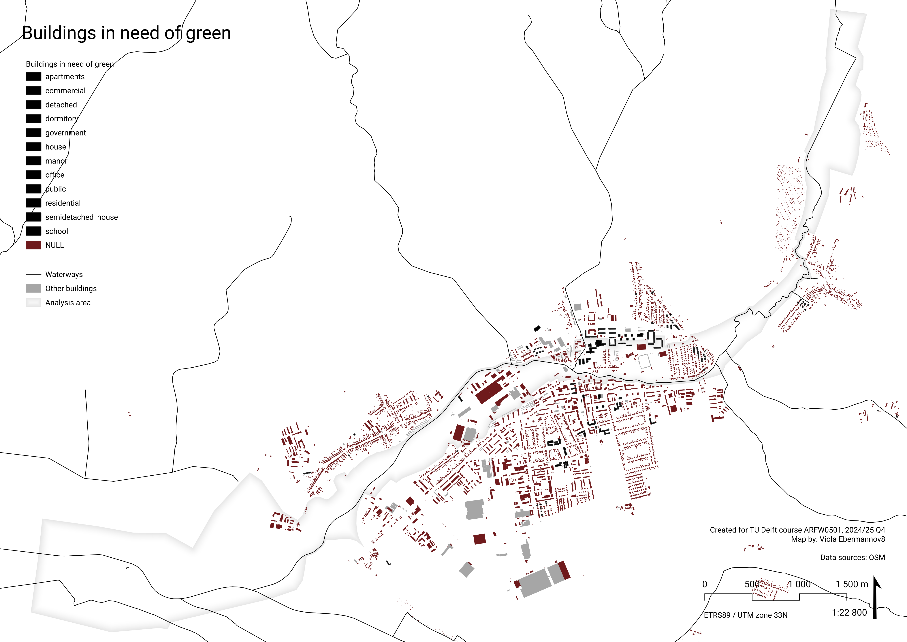
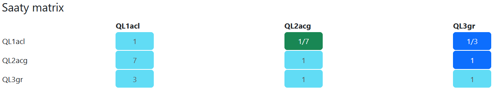

Urban stream restoration – Teplica (Senica, SK)
Project report of Group C (WIP)
Introduction
How to approach stream restoration so that it gives place for desired urban and community facilities, as well as improving biodiversity, ecological connectivity, and water retention in the landscape?
This report presents a spatial Multi Criteria Data Analysis and Typology Construction to determine possibilities for restoration of the Teplica river in the town Senica (Slovakia).
Note: This is student work created as part of the Applied Spatial Analysis for Sustainable Urban Development course at TU Delft.
Note #2: THIS IS A WIP, IT WILL BE FINALISED IN END OF JUNE 2025.
Key words:
Urban Stream Restoration, Biodiversity, XXXX, XXXX

Colophon
Students – roles and contributions
Hongyue Kang (MSc Urbanism) – Presentation Lead, Data Analyst (microclimate analysis, NDVI)
Jiaoyang Wu (MSc Geomatics) – Data Analyst, Mapping Specialist (flood risk)
Kelly Schoonderwoerd (MSc Geomatics) – Editor, Data Analyst (surface temperature), R Expert, Clustering Lead
Viola Ebermannová (MSc Urbanism) – Project Coordinator, Research Lead, Design Lead (graphic guidelines and layout templates), Data Analyst (analysis geometry, space syntax analysis), MCDA Lead
Course information
Created as part of the course: ARFW0501 Applied Spatial Analysis for Sustainable Urban Development (2024/25 Q4), Faculty of Architecture and the Built Environment.
Tutors: Dr. Daniele Cannatella, Dr. Claudiu Forgaci
In collaboration with the ReBioClim project.
Methods
MCDA
Selection of objectives and criteria – three pillar system

Detailed research structure
Weighting
We weighted the criteria for MCDA with a pairwise comparison matrix (Saaty matrix) using Fuzzy AHP by Pavel Holeček. The complete matrix looks like this:

The weights are assigned as follows. Overall, highest weights were assigned to CA1temp (targetting cooling down summer surface temperature) and QL2acg (potential for central urban functions) and QL3gr (need of built up area for green). Criteria that scored high directly influence livability offer a very actionable basis for the public sector and show potential for feasible and well advocatable investments.
| Criterion | Weight |
|---|---|
| B1uses | 0.058 |
| B2pot | 0.027 |
| B3ndvi | 0.083 |
| CA1temp | 0.198 |
| CA2soil | 0.03 |
| QL1acl | 0.098 |
| QL2acg | 0.235 |
| QL3gr | 0.27 |

Consistency is acceptable with consistency ration CR = 0,086 :
CI = 0.121
RI = 1.4
CR = 0.086
Analysis geometry
The analysis geometry is a vector polygon layer consisting of morphologically determined elements. The decision to create geometry tailored to the local spatial conditions has two main reasons:
- to make the analysis more accessible to locals – through analysing on geometry familiar to them, hopefully making interpretation easier, and
- to make the results more actionable – through analysing on logical spatial units results will be more space-specific
At the core is a Regional biocorridor as indicated in Spatial Ecological Stability System (ÚSES) – an approximately 20 meter buffer around the stream. We differentiate left and right bank, because it matters for accessibility (significant for all attributes in quality of life).
The bounds of the analysis geometry were determined based on the floodplain of the river indicated by flood danger maps. This is the area that “belongs” to the river, thus it should be restored together with the watercourse. (The outline was based on raster data available online and spatial logic of the area to respect natural boundaries.)
The flood plain was partitioned based on local morphology and land cover, and in some cases inspired by the parcellation structure to create a smaller grain in areas with large unpartitioned fields.


Analysis geometry update after 27. 5. consultation
Cells along the river: i went through it manually and merged some cells to create larger areas. Always merged only the ones that i previously classified as the same landcover. I did it based on spatial logic and continuity of surrounding division lines. Left and right bank is still distinguished.
Other cells: In few places, i simplified field separation and merged a road into it (where there is no significant different type of land cover along the road.)
- Viola

Land cover classification
The analysis geometry was manually assigned Land Cover classes. Below is an overview of these classes with a typical example. Each land cover class was assigned an estimate ecological quality indicator based on intuition.


Data structure
General workflow of aggregating data is: 0. Perform calculations and create base layer 1. Normalise values 2. Aggregate (3. Eventually normalise again)
We use linear min-max normalisation to 0-1, eventually inversed (1-[standard min-max normalisation]).
WIP - please refer to detailed research structure flowchart for some information.
Biodiversity
How to improve local and supra local biodiversity resilience by interventions within the stream flood plain? -> which spaces to prioritize based on value and feasibility of intervention
WIP – please refer to the main research structure flow chart for overview.
#1 Which spaces should be prioritised because of their connectivity to ÚSES?
Data
What is ÚSES?
Územný systém ekologickej stability (ÚSES) (Spatial system of ecological stability) is a system of spatial units intended to securing the ecological stability of Slovakian landscape, connecting natural areas, and protection of biotopes and representative species in their natural habitats. It is a legally anchored documentation (Act No. 543/2002 Z. z. – About the protection of nature and landscape).
The elements of ÚSES are biocenters, biocorridors (connecting biocenters to allow for movement of organisms and genetical information exchange), and interaction elements (spatially tied with biocorridors). These elements are defined on supraregional, regional, and local scale.
(SAŽP n.d.)
ÚSES within our area

Aggregation and normalisation
Values were assigned based on the level of connectivity to ÚSES. Highest value was assigned to polygons intersecting with ÚSES elements, polygons that are connected by continuous green land cover (as defined in Land Cover general type of landcover) were also assigned a slight priority.
polygons that are connected by (contuinuos) “green” land cover to ÚSES elements –> 0,3
other polygons –> 0

#2 Which spaces should be prioritised based on ecological quality improvement potential?
Our argument is that spaces with a potential for a high impact improvement and at the same time good investment feasibility should be prioritised, because of good actionability of intentions/plans.
Potential for high impact improvement is determined by unsatisfactory ecological quality. Investment feasibility is determined by attractivity to invest in biodiversity improvement and in general spatial quality improvement in an area like this. High investment feasibility is in the surrounding of dwellings, in spaces that are already upkept. Low investment feasibility is in agricultural areas, where produce is prioritised. In these areas in general it is advised to use agricultural methods that can aid local biodiversity.

Aggregation and normalisation
The potential was calculated on range 0-1 directly on Analysis geometry polygons.
#3 Which spaces should be prioritized based on current state of the vegetation?
NDVI
Based on the different value of NDVI mean, we can deduce the vegetation state in each spatial geometry.
0–0.1 – Bare soil or urban hardscape
0.1–0.3 – Sparse or dry vegetation
0.3–0.6 – Moderate vegetation
> 0.6 – Dense and healthy vegetation

Aggregation and normalisation
Data was aggregated based on average value within analysis geometry polygon, and normalised by 1-[linear min-max] –> priority is given to low quality vegetation.

Weighting
An overall pairwise comparison matrix was created for all indicators at once (see more above). For comparing biodiversity criteria among each other, the values were given as follows:

The calculated weights for biodiversity indicators are:
| Criterion | Weight |
|---|---|
| B1uses | 0.058 |
| B2pot | 0.027 |
| B3ndvi | 0.083 |
Biodiversity conclusion

Climate adaptation
How to use areas in the flood plain to capture water in the landscape? -> where is good space for infiltration basins and natural flood protection measures based on soil types, and where is space for (wet) cooling measures?
WIP – please refer to the main research structure flow chart for overview.
This chapter is based on the fact that in western slovakia, there is a large drought problem, and water management activities should target capturing water in the landscape.
#1 Which spaces should be prioritized for interventions aimed at cooling the area down?
To analyse surface temperatures, we found a Google Earth Engine script made by Ramadhan on YouTube (2024) that uses information from Sentinel-2, LANDSAT, and DEM to predict a raster LST (land surface temperature) with a higher resolution than other available datasets on LST, namely 10-meter resolution. The computations are complicated and will not be discussed in further detail in this report, but the results are relevant and useful to our research. Mainly to answer the question of which spaces should be prioritized to be wetter to help the area cool down, because now it is too hot. The draft image shows the results for dates 2024-06-01 to 2024-08-31, since these three months include the summer and will therefore be most susceptible for heat stress, which makes this time period interesting to look at for our research.
The Google Earth Engine (GEE) script was adapted to analyse our area of interest (Senica and surroundings) and an interesting time period as mentioned earlier. The code produced a GeoTiff file that we downloaded for further processing. The LST values in this file are given in degrees Celsius and range from 27-38. The raster GeoTiff file was combined with our analysis geometry layer using the ‘zonal statistics’ tool in QGIS. This resulted in a vector layer with our analysis polygons, including a column in the attribute table representing the mean value of the LST raster layer inside that specific polygon. This value represents the aggregation of LST values, which was then normalized with the following statement in the field calculator:
1 - (maximum("_mean") - "_mean") / (maximum("_mean") - minimum("_mean"))The normalization is a linear min-max normalization for a benefit criterion, meaning that areas with a higher LST should be prioritized for improvements and development. A lower LST would be desirable and thus has less need for spatial developments to improve LST, which is represented in lower normalization values (closer to 0).

Weigting and normalisation
Weighted as mean by Zonal statistics tool.

#2 Where does the soil have high potential for water retention?
Soil retention ability and permeability
From Atlas of Slovakia, quite small scale.
Soil retention in this map means ….. Permeability means ….

Aggregation and normalisation
RS High+ P Medium -> 1

Weighting
An overall pairwise comparison matrix was created for all indicators at once (see more above). For comparing climate adaptation criteria among each other, the values were given as follows:

The calculated weights for climate adaptation criteria are:
| Criterion | Weight |
|---|---|
| CA1temp | 0.198 |
| CA2soil | 0.03 |
Climate adaptation conclusion

Quality of life
What types of places should be created in the stream flood plain? -> Ammenities, green spaces, connections?
WIP – please refer to the main research structure flow chart for overview.
#1 Where is potential for community functions?
Angular choice analysis
On OSM street network, in area there are no clearly fast routes and there are missing pathways along some roads, so we took all roads from the dataset as potentially slow.
The values of Angular choice analysis with radius 500 m were lineary normalised to 0-1 range.
Weighting and normalisation
Aggregated as maximum value in polygon. Where there are no intersecting roads (gives result ‘NULL’), 0 was assigned. This aggregate value was lineary normalised to 0-1 range.
aggregate( 'layer: angular_choice', 'max', "attribute: r=500 m, normalised", intersects($geometry,geometry(@parent)))
#2 Where is potential for “central” functions?
Angular choice analysis was calculated for radii 1 km and 2 km. First, these two attributes were normalised. Then these values were combined to a common indicator, giving larger weight to the larger radius:
This attribute was then normalised.
Aggregation and normalisation
Again, the value was aggregated by calculating maximum value in the polygon and lineary normalised to 0-1 range.
aggregate( 'layer: angular_choice', 'max', "attribute: AC1km2km, normalised", intersects($geometry,geometry(@parent)))#3 Where is a large need for green?
Attraction reach analysis
explanation of what it calculates
Attraction reach was calculated from centroids of buildings to green areas, as classified in OSM, weighted by the area of the green area. Value was normalised.
Aggregation and normalisation
Analysis geometry polygons was buffered by 500 m, to simulate area in 500 m walking distance of each polygon. (While technically not 500 m walking distance, on this small scale we consider the difference negligible.)

Then, we filtered out houses that we consider “need green”. Unfortunately, many houses in this area have “type” ‘NULL’, which skews the analysis.
CASE
WHEN
"type" IS NULL OR "type" IS 'apartments' OR "type" IS 'detached' OR "type" IS 'dormitory' OR "type" IS 'farm_auxiliary' OR "type" IS 'government' OR "type" IS 'house' OR "type" IS 'manor' OR "type" IS 'office' OR "type" IS 'public' OR "type" IS 'residential' OR "type" IS 'school' OR "type" IS 'semidetached_house'
THEN 1
ELSE 0
END
Then, for each buffered Analysis geometry polygon, sum was calculated of values from buildings in need of green intersecting it (value polygons with no intersecting buildings is zero).
aggregate( 'layer: Buildings in need of green', 'sum', "Attraction reach to green areas, weighted by area, normalised", intersects($geometry,geometry(@parent)))This was lineary normalised to 0-1 into the final value.

PLACEHOLDER SPACE SYNTAX base layers – UNTIL WE PUT IT IN CORRECT CHAPTERS
Angular choice:
Every choice of path from every location to every destination – how many possible routes go through location
500 m
very local scale, scale of children playing and shops on the corner even on this scale, there are some centralities along the river
this means the river has a potential to be used by the community and act as a very local common space under social control
1000 m
local scale of walking to shop or walking the dog
paths along river do not have very low angular choice, hinting at them being possibly moderately frequented
more centralities at bridges
2000m:
close to the end of walkable scale
some paths along river in the center have high angular choice, meaning they will likely be more frequented and have potential for active use and ammenities
more centralities at bridges
Attraction Reach Green space
What is the reachable potential attraction density of location (sqm)
green areas weighted by area
500m:
very local scale, scale of children playing and shops on the corner
river and surroundings as potential new green areas to serve local scale in the west and north of the town
1000m:
local scale of walking to shop or walking the dog
river and surroundings as potential new green areas to serve local scale in the west and north of the town
2000m:
close to the end of walkable scale
center/east of town not having access to more large areas of green
Attraction Reach Teplica
What is the reachable potential attraction density of location (sqm)
measured to points every 5m of waterway
500m:
very local scale, scale of children playing and shops on the corner
Teplica quite well accessible from houses
SW: industry is not so well connected
SE: lacking connection between road parallel to river
1000m:
local scale of walking to shop or walking the dog
SW industry not allowing houses behind it to access river
SE: still visible missing connection between parallel road and river
2000m:
close to the end of walkable scale
very similar to 1k
SW: industry finally permeable, however this is quite a large distance and if the river and the way to it are not nice, there are no reasons to go
W: the small village is not connected to a large path of the river, that is why it is lighter
SE: still visible missing connection between parallel road and river
Weighting
An overall pairwise comparison matrix was created for all indicators at once (see more above). For comparing quality of life criteria among each other, the values were given as follows:

The calculated weights for climate adaptation criteria are:
| Criterion | Weight |
|---|---|
| QL1acl | 0.098 |
| QL2acg | 0.235 |
| QL3gr | 0.27 |
Quality of life conclusion

MCDA conclusion
We achieved the final conclusion by calculating the sum of all criteria for each polygon. This shows which areas have over all the greatest potentials and should be prioritised when making decisions on where to target urban stream restoration interventions. However, that does not mean that the areas with low priority should not be targeted. Sustainable stream restoration should be designed in a complex way, for the larger site (stream flood plain) as a whole.

Typology construction
Kelly is working on this.
We feel like our goal for typology alligns pretty well with our main research question How to approach stream restoration so that it gives place for desired urban and community facilities, as well as improving biodiversity, ecological connectivity, and water retention in the landscape?
Hopefully, we will get types of areas that can make it easier to create example design interventions. Perhaps something like “areas with large potential for community facilities with water retention function”, “areas with community functions and maintained high biodiversity”, “areas with biodiversity boost, improved surface permeability and connectivity”.
Results
Discussion
Discussion of results
Reflection
Conclusion
Appendix
Sources
Literature
SAŽP. (n.d.). Územný systém ekologickej stability (ÚSES). SAŽP – Slovak Environment Agency. Retrieved on June 6, 2025 from https://www.sazp.sk/zivotne-prostredie/starostlivost-o-krajinu/zelena-infrastruktura/uzemny-system-ekologickej-stability-uses
Map layers
Images
Street View of Senica – Google Maps. (May 2012). Retrieved on May 22, 2025 from: https://www.google.com/maps/place/905+01+Senica,+Slovensko/@48.6841521,17.3581313,3a,75y,296.73h,88.04t/data=!3m7!1e1!3m5!1sbkMc3aSUkJxRvi5IszgGWg!2e0!6shttps:%2F%2Fstreetviewpixels-pa.googleapis.com%2Fv1%2Fthumbnail%3Fcb_client%3Dmaps_sv.tactile%26w%3D900%26h%3D600%26pitch%3D1.9640483562330928%26panoid%3DbkMc3aSUkJxRvi5IszgGWg%26yaw%3D296.73281886129774!7i13312!8i6656!4m7!3m6!1s0x476cb4e2e7ed1a27:0x400f7d1c696ee40!8m2!3d48.6811502!4d17.3672337!10e5!16zL20vMGRyeG43?entry=ttu&g_ep=EgoyMDI1MDUyMS4wIKXMDSoASAFQAw%3D%3D